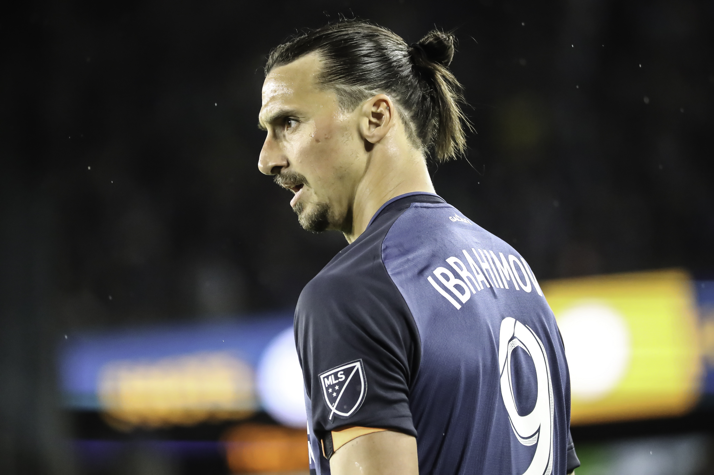

<ion-app>
  
  
  <!-- <ion-header> -->
    <ion-toolbar style="width: auto; margin-left: auto; text-align: -webkit-right; height: 50px;" [ngStyle]="{ 'display': (settingPage.getToolbarSideMenuStatus() === true) ? 'flex' : 'none'}">
      <ion-item-group slot="end" style="display: inline-flex; height: fit-content; align-items: center;">
  

        <ion-button slot="icon-only" fill="clear" (onclick)="clickNotiBtn($event)">
          <ion-icon class="toolbarIcon" src="../assets/icon/layout/icon-notification.svg"></ion-icon>
        </ion-button>
        <div class="verticalLine"></div>
        <ion-button fill="clear" style="font-size: 9px; color: #4d4f5c; text-transform: capitalize; " (click)="openToolbarPopover($event, 'UserDropDownComponent')">
          <ion-label>{{loggedUser.value}}</ion-label>
          <ion-icon src="../assets/icon/layout/icon-arrow-down.svg" style="padding: 5px;"></ion-icon>
        </ion-button>
        <ion-avatar class="userProfile">
             
           
          <!--   -->
        </ion-avatar>
      </ion-item-group>
    </ion-toolbar>
  <!-- </ion-header> -->

    <ion-split-pane when="xs"  *ngIf="settingPage.getSideMenuType() === 'fullMenu'" >    
      <!-- Full menu -->    
      <ion-menu type="overlay" menuId="fullMen" class="sidebarBackground"
      [ngStyle]="{ 'display': (settingPage.getSideMenuType() === 'fullMenu' && settingPage.getToolbarSideMenuStatus() === true) ? 'flex' : 'none'}">
      <!-- <ion-menu type="overlay" menuId="fullMen" class="sidebarBackground"
        [ngStyle]="{ 'display': (sideMenuStyle === 'fullMenu' && settingPage.getToolbarSideMenuStatus()) ? 'flex' : 'none'}"> -->
        <ion-header>
          <ion-toolbar color="#43425d">
            <ion-avatar class="sidebarLogo">
              
            </ion-avatar>
            <ion-icon class="collapse" slot="end" color="medium" name="arrow-dropleft"
              style="cursor:pointer; font-size: 30px; padding: 10px; " (click)="collapseMenu(true)">
            </ion-icon>
          </ion-toolbar>
        </ion-header>
        <ion-content>
          <ion-list>
            <ion-menu-toggle auto-hide="false" *ngFor="let p of appPages">
              <ion-item [routerDirection]="'root'" [routerLink]="[p.url]" routerLinkActive="router-link-active"  
                lines="none" [ngStyle]="{'--ion-background-color:': 'darkgrey'}" class='highlight-focus'>
                <ion-icon slot="start" class="sidebarIcon" [src]="'../assets/icon/sidebar/' + [p.icon]"></ion-icon>
                <ion-label class="sidebarList">{{p.title}}</ion-label>
              </ion-item>
            </ion-menu-toggle>
          </ion-list>
        </ion-content>
      </ion-menu>
      <ion-router-outlet main></ion-router-outlet>
    </ion-split-pane>
  
    <ion-split-pane when="xs"  mode="md" *ngIf="settingPage.getSideMenuType() === 'iconMenu'">
      <!-- Icon menu only -->
      <ion-menu  mode="md" type="overlay" menuId="iconMen"  class="sidebarBackgroundIconView"
      [ngStyle]="{ 'display': (settingPage.getSideMenuType() === 'iconMenu' && settingPage.getToolbarSideMenuStatus() === true) ? 'flex' : 'none' }" 
      style="min-width: fit-content;">
        <ion-header style="display: inline-table;">
          <ion-toolbar color="#43425d">
            <ion-icon class="collapse" slot="end" color="medium" name="menu"
              style="cursor:pointer; font-size: 30px; padding: 10px;" (click)="collapseMenu(false)">
            </ion-icon>
          </ion-toolbar>
        </ion-header>
        <ion-content  mode="md" style="min-width: fit-content;" no-bounce>
          <ion-list  mode="md" style="min-width: fit-content;">
            <ion-menu-toggle auto-hide="false" *ngFor="let p of appPages">
              <ion-item [routerDirection]="'root'" [routerLink]="[p.url]" routerLinkActive="active-link" 
                lines="none" [ngStyle]="{'--ion-background-color': 'blue' }" class='highlight-focus' style="min-width: fit-content;">
                <ion-icon slot="start" class="sidebarIcon" [src]="'../assets/icon/sidebar/' + [p.icon]" style="min-width: fit-content;"></ion-icon>
              </ion-item>
            </ion-menu-toggle>
          </ion-list>
        </ion-content>
      </ion-menu>
      <ion-router-outlet main></ion-router-outlet>
    </ion-split-pane>
</ion-app>
